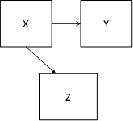

Metainformation
| Tag | Value |
|---|---|
| file | Descriptive-statistics_vufsw-correlations-1296-nl_vufsw-correlations-1296-nl |
| name | vufsw-correlations-1296-nl |
| section | inferential statistics/parametric techniques/correlations |
| type | schoice |
| solution | TRUE, FALSE, FALSE, FALSE |
| Type | interpreting output |
| Program | NA |
| Language | dutch |
| Level | statistical literacy |
Question
In de onderstaande partiële correlatiematrix, inclusief zero-order
correlaties, is onderzocht of er een verband bestaat tussen leeftijd en
het salaris van een catwalk model en of deze relatie verandert wanneer
je de invloed van de aantrekkelijkheid van het model constant houdt. Er
geldt Y = salaris (Salary: in Britse ponden), X = leeftijd (Age: in
jaren), en de derde variabele (Z) is aantrekkelijkheid (Beauty: een
schaal waarbij een hogere score betekent een hogere
aantrekkelijkheid).

Als je de correlaties afrondt op twee decimalen, welk causaal model is dan van toepassing op de resultaten van de analyse?
- TRUE: 
-
FALSE:

-
FALSE:

-
FALSE:

- True
- False
- False
- False